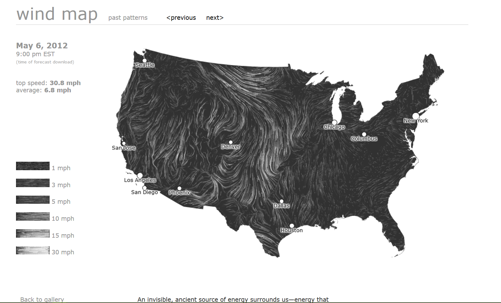

Max grew up in beautiful New Jersey, and had a generally unremarkable childhood. After attending college in Maine and majoring in Psychology, Max was a middle school math teacher in Brooklyn for two years. Hoping to work on similar issues of inequity in cities, Max began a career in urban planning in the Bay Area. Max worked for the City of Berkeley and an affordable housing think tank in San Francisco. Max is currently working towards a Master of City Planning degree at MIT. In his free time, Max enjoys cooking spicy food, hiking, and listening to music.
A visualization that Max finds particularly inspiring is the Wind Map, created by Hint.FM using data from the National Oceanic and Atmospheric Administration.
